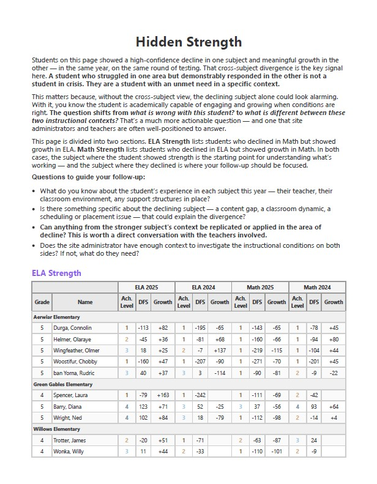
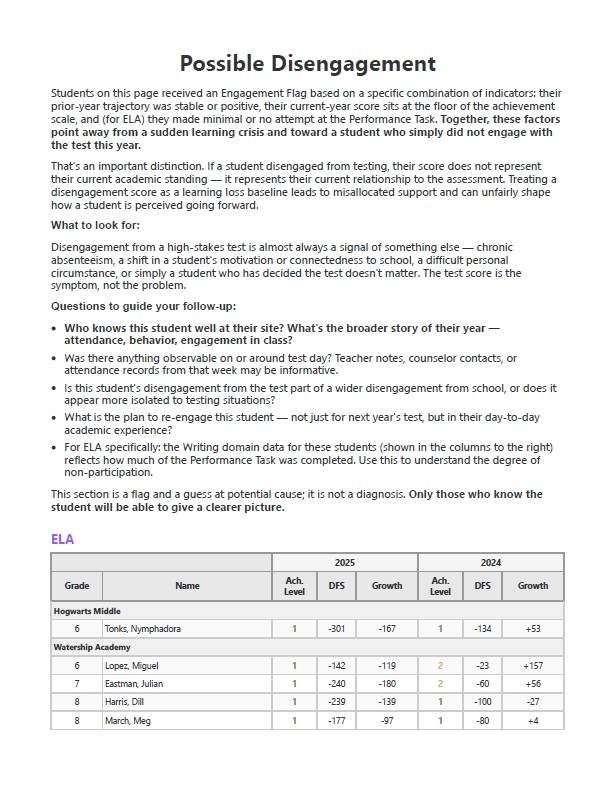
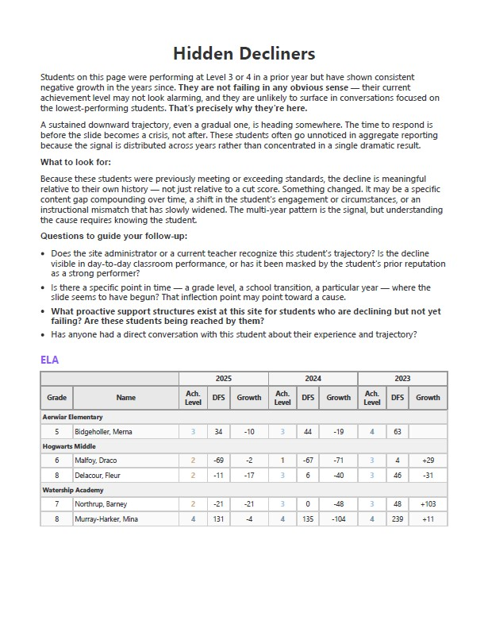
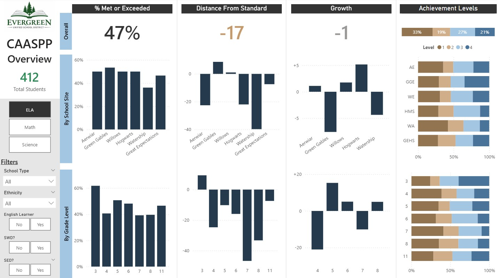

What Makes This Package Different
Four deliverables you won't find packaged together anywhere else—each one designed to answer a question your district actually needs answered.
ELA, Math & Science Deep Dive Reports
Instead of one sprawling report, you get three focused analyses—one per subject—each built around the questions that matter most for that content area. Distance from Standard, Percent Met and Exceeded, multi-year trends, achievement level breakdowns, subgroup disaggregations, and site-by-site comparisons. The depth of a comprehensive analysis, organized so it's actually usable by curriculum leads and content coaches—not just data staff.
Covers CAASPP ELA and Math results plus CAST (California Science Test) results.


Click any image to enlarge
Student Action Steps Report
This is where the system-level analysis connects to individual students. For each student, the report identifies their performance level, growth trajectory, and specific, prioritized next steps for teachers and coaches. Not generic recommendations—actual action steps grounded in your district's results. Designed for principals and instructional coaches to use at the start of a new year, in PLC meetings, or during individual teacher coaching conversations.



Click any image to enlarge
Interactive Data Dashboard
A live, interactive Power BI dashboard built from your district's results. Filter by school site, grade level, subject, or student group. Toggle between metrics. See your data move in real time instead of hunting through static pages. Built for administrators who want to explore their results independently—and for leadership team meetings where the data needs to be visible and discussable in the room.

Click to enlarge
California Dashboard Prediction Report
Your CAASPP results feed directly into your California Dashboard accountability ratings—but the connection isn't obvious, and most districts don't know where they stand until the Dashboard is published months later. This standalone report shows you what your current results predict for your Dashboard color, by indicator and student group, before anyone else sees it. Know your trajectory early enough to act on it.

Click to enlarge